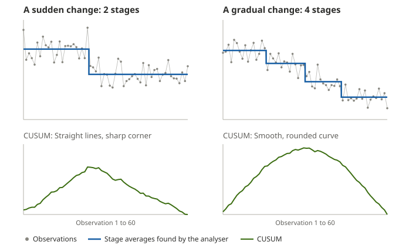

Use these checks as clues, not guarantees. They are exploratory and do not establish that a result is correct.
Checking your StepChange results
A practical guide to reviewing your chart and checking your results
Start with the dots and what you know about the process. The two checks in the analyser can help you decide what needs a closer look.
Start here: how to check your result
- Check the data. Is this the right measure? Look for missing dates, unusual values and changes in how the measure was recorded. Use the Data Validator if needed.
- Look at the dots first. Does the run chart show a pattern, a sudden change or a gradual trend? Note when the process change was introduced and allow for a possible delay before it affects the measure.
- Compare the other views. Look at the green CUSUM line and the stages on the step-change chart. Are their timings and directions consistent with what you see in the dots? A smooth, curved CUSUM can mean one gradual change rather than several separate steps: see One gradual change, or several steps? They use the same data, so agreement is not independent confirmation.
- Think about the size and timing. Is the observed difference worthwhile in practice? Could anything else have changed at the same time? A chart can suggest a change, but cannot prove what caused it.
- Use the checks when helpful. Run Check repeatability to see whether the stage dates vary, and Check for autocorrelation to look for a possible relationship between neighbouring measurements. The explanations below show what to do with the results.
- Decide and keep reviewing. Consider the risk, other evidence and any balancing measure, then decide what to do next and continue monitoring. For important or unclear findings, seek suitably qualified advice.
1. Does the answer change when repeated?
The analyser uses randomly shuffled versions of your data when looking for changes. Different shuffles can produce slightly different results, especially when a possible change is close to the selected threshold. Wayne Taylor also describes this variation in his change-point analysis paper (conclusion, pp. 17–18). Increasing the number of shuffles may make the calculation more precise, but does not remedy dependence or other data problems.
The repeatability check runs the same analysis 10 times, using the same data and settings but fresh random shuffles. It reports the number of stages and the dates at which new stages start. When a date varies, it also shows the neighbouring stage averages in the runs where that boundary appears. A repeatable count alone is not enough: the dates can still differ. The averages are descriptions, not a separate significance test.
If the results differ: look at which boundary dates vary, compare them with the dots and what you know about the process, and treat those particular boundaries with caution. For example, if six stages appear in some runs and seven in others, the extra boundary may be borderline. The broader picture may still be useful. Check data quality and possible dependence; consider more shuffles to reduce calculation-to-calculation variation, and seek advice if the decision is important.
If the results agree: the result is repeatable for these 10 runs and settings—not necessarily correct, significant, or caused by your intervention. Repeating the analysis does not repair unsuitable assumptions or data.
2. Are neighbouring measurements related?
Autocorrelation means that values measured at different times are related. Think of it as an echo: what you see at one time can resemble what you saw earlier. For example, this month’s waiting list can partly reflect last month’s waiting list. The relationship does not necessarily mean one observation caused another.
Patterns like this can arise for several reasons:
- Momentum: large systems often take time to change, so a high waiting list may remain high for a while.
- Seasonal cycles: demand might rise in the same season each year.
- Moving averages: smoothed figures share some of the same underlying observations, linking one reported value to the next.
A small positive or negative estimate can occur by chance, even when observations are independent. A gradual trend or another influence on the process can also make values at different times appear related. When measurements are related, shuffling them as if their order does not matter can make the analyser’s evidence misleading.
Example: a gradual rise. Suppose a measure rises from 100 to 102, 104 and 106 after a process change. Each value is close to the previous one, and the gradual trend could make the check show a positive relationship. That does not mean the improvement should be dismissed, or prove that the process change caused it. Look at the dots and the timing, and keep monitoring. The estimate may differ if the analyser divides the rise into stages.
Choose how often the measure is recorded. The check estimates the relationship between neighbouring observations after subtracting their estimated stage averages. It only pairs neighbouring observations within the same stage, and skips gaps that do not match the chosen frequency. It does not check relationships at longer intervals, such as a seasonal pattern repeating every 12 months. For monthly or yearly data, there must be one observation per calendar month or year. Daily and weekly pairs must be exactly one or seven days apart. The number shown runs from −1 to +1: positive suggests neighbours tend to move together; negative suggests alternation; a value near zero does not rule out dependence.
Use it as a clue, not a verdict. The result can change when the estimated stages change and can be affected by trends, seasonal patterns, changes in variation, missing data and short periods. This simple check requires 20 usable pairs, but that is a practical guardrail, not a guarantee. If the timing is irregular, it is not suitable.
What next? Check that dates and records are complete; look for trends or seasonal cycles. If possible, review a reasonably stable period separately, rather than assuming a relationship seen in the whole series reflects dependence. For a high-stakes decision or a persistent concern, ask a statistician about methods that account for the timing of observations. A low estimate is not permission to ignore other warning signs.
3. One gradual change, or several steps?
The analyser describes your data as a series of flat stages. When a measure changes gradually, for example as a new way of working is learned, rolled out team by team or adopted over time, the analyser can only show that as a staircase of steps. Each step gets a date, but the dates do not mark separate events.

How to tell them apart:
- Look at the shape of the CUSUM. A sudden change gives straight lines that meet at a sharp corner. A gradual change gives a smooth, rounded curve.
- Look at the steps. Several steps of similar size, fairly evenly spaced and all in the same direction often mean one gradual change.
- Look within each stage. If the first points in each stage tend to sit on one side of its average and the last points on the other, the measure is still moving within the stage.
- Repeat the analysis. Steps that are part of a gradual change can come and go between runs of Check repeatability, or when the confidence level is changed. A sudden change usually stays put. In the example above, the sudden change was found at the same point in every run; at 99.7% confidence the gradual change was shown as two steps in some runs and three in others.
If the change looks gradual: describe it as one gradual change over the period, not as several separate improvements on the step dates. Judge its size from where the level started to where it settled, and do not look for a separate cause for each step. A gradual change can also make Check for autocorrelation show a positive value, as the gradual-rise example above explains.
Bring the evidence together
Use the four practical steps to consider the run chart, CUSUM, stage chart and data checks together. Decide what action is proportionate to the risk, record what you expect and keep monitoring. Do not delay urgent safety action just to gather more data.
None of these checks alone proves that a change occurred because of your intervention, or that it will last. No detected step does not prove that nothing changed.